cran_packages <- c("ggplot2", "factoextra", "ade4", "pheatmap", "MASS", "tibble")
bioc_packages <- c("SummarizedExperiment", "phyloseq", "airway", "Hiiragi2013", "Biobase")
cran_missing <- cran_packages[!sapply(cran_packages, requireNamespace, quietly = TRUE)]
if (length(cran_missing) > 0) {
install.packages(cran_missing)
}
bioc_missing <- bioc_packages[!sapply(bioc_packages, requireNamespace, quietly = TRUE)]
if (length(bioc_missing) > 0) {
if (!requireNamespace("BiocManager", quietly = TRUE)) {
install.packages("BiocManager")
}
BiocManager::install(bioc_missing)
}Chapter 7: Multivariate Analysis
Setup
Install required packages if missing.
Learning outcomes
- See examples of matrices that come up in the study of biological data.
- Perform dimension reduction to understand correlations between variables.
- Preprocess, rescale, and centre data before starting a multivariate analysis.
- Build new variables, called principal components (PCs), that are more useful than the original measurements.
- See what is “under the hood” of PCA: the singular value decomposition of a matrix.
- Visualise what SVD achieves and learn how to choose the number of principal components.
- Run through a complete PCA from start to finish.
- Project factor covariates onto the PCA map for a more useful interpretation of results.
Example data
The turtles dataset is a matrix of three dimensions of biometric measurements on painted turtles.
turtles = read.table("../data/PaintedTurtles.txt", header = TRUE)
turtles[1:4, ] sex length width height
1 f 98 81 38
2 f 103 84 38
3 f 103 86 42
4 f 105 86 40The athletes dataset contains the performance of 33 athletes in the 10 disciplines of the decathlon.
load("../data/athletes.RData")
athletes[1:3, ] m100 long weight highj m400 m110 disc pole javel m1500
1 11.25 7.43 15.48 2.27 48.90 15.13 49.28 4.7 61.32 268.95
2 10.87 7.45 14.97 1.97 47.71 14.46 44.36 5.1 61.76 273.02
3 11.18 7.44 14.20 1.97 48.29 14.81 43.66 5.2 64.16 263.20Summary of each decathlon event.
stopifnot(nrow(athletes) == 33, ncol(athletes) == 10)
athletesSummary = lapply(athletes, function(x) c(min = min(x), max = max(x), mean = mean(x), sd = sd(x)))
athletesSummary$m100
min max mean sd
10.620000 11.570000 11.196364 0.243321
$long
min max mean sd
6.2200000 7.7200000 7.1333333 0.3043401
$weight
min max mean sd
10.270000 16.600000 13.976364 1.331991
$highj
min max mean sd
1.7900000 2.2700000 1.9827273 0.0939838
$m400
min max mean sd
47.44000 51.28000 49.27667 1.06966
$m110
min max mean sd
14.1800000 16.2000000 15.0487879 0.5067652
$disc
min max mean sd
34.360000 50.660000 42.353939 3.719131
$pole
min max mean sd
4.0000000 5.7000000 4.7393939 0.3344206
$javel
min max mean sd
49.520000 72.600000 59.438788 5.495998
$m1500
min max mean sd
256.6400 303.1700 276.0385 13.6571 The Msig3transp dataset contains gene expression profiles of sorted T-cell populations from different subjects. The columns are a subset of gene expression measurements and correspond to 156 genes that show differential expression between cell types.
load("../data/Msig3transp.RData")
dim(Msig3transp)[1] 30 156The GlobalPatterns dataset is from the phyloseq package. It contains counts of different species (or Operational Taxonomic Units, OTUs) of bacteria, which are identified by numerical tags. The rows are labelled according to the samples in which they were measured and the (integer) numbers represent the number of times each OTU was observed in each of the samples.
data("GlobalPatterns", package = "phyloseq")
GPOTUs = as.matrix(t(phyloseq::otu_table(GlobalPatterns)))
GPOTUs[1:4, 6:13]OTU Table: [4 taxa and 8 samples]
taxa are rows
246140 143239 244960 255340 144887 141782 215972 31759
CL3 0 7 0 153 3 9 0 0
CC1 0 1 0 194 5 35 3 1
SV1 0 0 0 0 0 0 0 0
M31Fcsw 0 0 0 0 0 0 0 0The airway dataset contains RNA-seq data for different biological samples (columns).
library("SummarizedExperiment")Loading required package: MatrixGenericsLoading required package: matrixStats
Attaching package: 'MatrixGenerics'The following objects are masked from 'package:matrixStats':
colAlls, colAnyNAs, colAnys, colAvgsPerRowSet, colCollapse,
colCounts, colCummaxs, colCummins, colCumprods, colCumsums,
colDiffs, colIQRDiffs, colIQRs, colLogSumExps, colMadDiffs,
colMads, colMaxs, colMeans2, colMedians, colMins, colOrderStats,
colProds, colQuantiles, colRanges, colRanks, colSdDiffs, colSds,
colSums2, colTabulates, colVarDiffs, colVars, colWeightedMads,
colWeightedMeans, colWeightedMedians, colWeightedSds,
colWeightedVars, rowAlls, rowAnyNAs, rowAnys, rowAvgsPerColSet,
rowCollapse, rowCounts, rowCummaxs, rowCummins, rowCumprods,
rowCumsums, rowDiffs, rowIQRDiffs, rowIQRs, rowLogSumExps,
rowMadDiffs, rowMads, rowMaxs, rowMeans2, rowMedians, rowMins,
rowOrderStats, rowProds, rowQuantiles, rowRanges, rowRanks,
rowSdDiffs, rowSds, rowSums2, rowTabulates, rowVarDiffs, rowVars,
rowWeightedMads, rowWeightedMeans, rowWeightedMedians,
rowWeightedSds, rowWeightedVarsLoading required package: GenomicRangesLoading required package: stats4Loading required package: BiocGenericsLoading required package: generics
Attaching package: 'generics'The following objects are masked from 'package:base':
as.difftime, as.factor, as.ordered, intersect, is.element, setdiff,
setequal, union
Attaching package: 'BiocGenerics'The following objects are masked from 'package:stats':
IQR, mad, sd, var, xtabsThe following objects are masked from 'package:base':
anyDuplicated, aperm, append, as.data.frame, basename, cbind,
colnames, dirname, do.call, duplicated, eval, evalq, Filter, Find,
get, grep, grepl, is.unsorted, lapply, Map, mapply, match, mget,
order, paste, pmax, pmax.int, pmin, pmin.int, Position, rank,
rbind, Reduce, rownames, sapply, saveRDS, table, tapply, unique,
unsplit, which.max, which.minLoading required package: S4Vectors
Attaching package: 'S4Vectors'The following object is masked from 'package:utils':
findMatchesThe following objects are masked from 'package:base':
expand.grid, I, unnameLoading required package: IRangesLoading required package: SeqinfoLoading required package: BiobaseWelcome to Bioconductor
Vignettes contain introductory material; view with
'browseVignettes()'. To cite Bioconductor, see
'citation("Biobase")', and for packages 'citation("pkgname")'.
Attaching package: 'Biobase'The following object is masked from 'package:MatrixGenerics':
rowMediansThe following objects are masked from 'package:matrixStats':
anyMissing, rowMediansdata("airway", package = "airway")
assay(airway)[1:3, 1:4] SRR1039508 SRR1039509 SRR1039512 SRR1039513
ENSG00000000003 679 448 873 408
ENSG00000000005 0 0 0 0
ENSG00000000419 467 515 621 365The metab dataset contains aligned mass spectroscopy peaks or molecules identified through their m / z ratios; the entries in the matrix are the measured intensities.
metab = t(as.matrix(read.csv("../data/metabolites.csv", row.names = 1)))
metab[1:4, 1:4] 146.0985388 148.7053275 310.1505057 132.4512963
KOGCHUM1 29932.36 17055.70 1132.82 785.5129
KOGCHUM2 94067.61 74631.69 28240.85 5232.0499
KOGCHUM3 146411.33 147788.71 64950.49 10283.0037
WTGCHUM1 229912.57 384932.56 220730.39 26115.2007Frequency of zeros.
prop.table(table(as.vector(GPOTUs == 0)))
FALSE TRUE
0.2093168 0.7906832 prop.table(table(metab == 0))
FALSE TRUE
0.8966461 0.1033539 prop.table(table(assay(airway) == 0))
FALSE TRUE
0.3889591 0.6110409 Low-dimensional data summaries
If we are studying only one variable, e.g., just the third column of the turtles matrix, we say we are looking at one-dimensional data. Such a vector, say all the turtle weights, can be visualised using a histogram. If we compute a one-number summary, say mean or median, we have made a zero-dimensional summary of our one-dimensional data. This is already an example of dimension reduction.
When considering two variables (x and y) measured together on a set of observations, the correlation coefficient measures how the variables co-vary. This is a single-number summary of two-dimensional data. Its formula involves the summaries \(\bar{x}\) and \(\bar{y}\):
\[ \hat{p} = \frac{\sum^n_{i=1}(x_i - \bar{x})(y_i - \bar{y})}{\sqrt{\sum^n_{i=1}(x_i - \bar{x})^2} \sqrt{\sum^n_{j=1}(y_j - \bar{y})^2}} \]
In R, the cor function calculates the correlation coefficient and when applied to a matrix, this function computes all the two-way correlations between continuous variables.
cor(turtles[, -1]) length width height
length 1.0000000 0.9783116 0.9646946
width 0.9783116 1.0000000 0.9605705
height 0.9646946 0.9605705 1.0000000All the values are close to 1 and it seems that all three variables mostly reflect the same “underlying” variable, which we might interpret as the size of the turtle.
Preprocessing the data
In many cases, different variables are measured in different units, so they have different baselines and different scales. These are not directly comparable in their original form.
For PCA and many other methods, we therefore need to transform the numeric values to some common scale in order to make comparisons meaningful.
- Centering means subtracting the mean, so that the mean of the centered data is at the origin.
- Scaling or standardising means dividing by the standard deviation, so that the new standard deviation is 1.
The correlation coefficient is simply the vector product of the centered and scaled variables. To perform these operations, there is the scale function, whose default behaviour when given a matrix or data frame is to make every column have a mean of 0 and a standard deviation of 1.
Standard deviation and mean before scaling.
apply(turtles[,-1], 2, sd) length width height
20.481602 12.675838 8.392837 apply(turtles[,-1], 2, mean) length width height
124.68750 95.43750 46.33333 Standard deviation and mean after scaling.
scaledTurtles = scale(turtles[, -1])
apply(scaledTurtles, 2, mean) length width height
-1.432050e-18 1.940383e-17 -2.870967e-16 apply(scaledTurtles, 2, sd)length width height
1 1 1 Plot scaled data.
library(ggplot2)
data.frame(scaledTurtles, sex = turtles[, 1]) |>
ggplot(aes(x = width, y = height, group = sex)) +
geom_point(aes(color = sex)) + coord_fixed()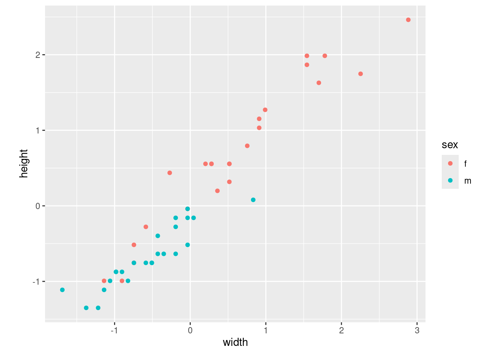
The aim of transformations is (usually) variance stabilisation, i.e., to make the variances of replicate measurements of one and the same variable in different parts of its dynamic range more similar. The standardising transformation using scale aims to make the scale (as measured by mean and standard deviation) of different variables the same.
Sometimes it is preferable to leave variables at different scales because they are truly of different importance. If their original scale is relevant, then we can (and should) leave the data alone. After pre-processing the data, we are ready to undertake data simplification through dimension reduction.
Dimension reduction
Dimension reduction was invented in 1901 by Karl Pearson as a way of reducing a two-variable scatterplot to a single coordinate. It was used by statisticians in the 1930s to summarise a battery of psychological tests run on the same subjects, thus providing overall scores that summarise many test variables at once. This idea of principal scores inspired the name principal component analysis (PCA).
PCA is called an unsupervised learning technique because, as in clustering, it treats all variables as having the same status. We are not trying to predict or explain one particular variable’s value from the others; rather, we are trying to find a mathematical model for an underlying structure for all the variables.
PCA is primarily an exploratory technique that produces maps that show the relations between variables and between observations in a useful way.
We use geometric projections that take points in higher-dimensional spaces and project them down onto lower dimensions. In the example below, point A is projected onto the red line generated by the vector \(v\). The dashed projection line is perpendicular (or orthogonal) to the red line. The intersection point of the projection line and the red line is called the orthogonal projection of A onto the red line generated by the vector \(v\).
x1=1;x2=3;y1=1;y2=2;ax=2.5;ay=3;
df=data.frame(x=c(x1,x2,ax),y=c(y1,y2,ay))
ggplot(df, aes(x=x,y=y)) +
geom_point(size=2) +
geom_abline(intercept=0.5,slope=0.5, color="red", linewidth=1.3) +
xlim(c(0,4)) +
ylim(c(0,4)) +
geom_segment(x=x1,y=y1,xend=x2-0.5,yend=y2-0.25,arrow=arrow(length = unit(0.3,"cm")),color="blue") +
geom_segment(x=ax,y=ay,xend=x2,yend=y2,arrow=arrow(length = unit(0.3,"cm")),color="orange",
linetype = 5, linewidth = 1.2, alpha = 0.5) +
annotate("text", x = ax+0.2, y = ay+0.15, label = "A", size=6) +
annotate("text", x = x2, y = y2-0.5, label = "proj_v(A)", size=6) +
annotate("text", x = x1+0.75, y = y1+0.24, label = "v", size=6, color="blue") +
annotate("text", x = x1-0.2, y = y1+ 0.2, label = "O", size=6) +
coord_fixed() +
theme_void() +
geom_point(size=2)
PCA is a linear technique, meaning that we look for linear relations between variables and that we will use new variables that are linear functions of the original ones (\(f(ax + by) = af(x) + b(y)\)). The linearity constraint makes computations particularly easy.
Lower-dimensional projections
The code below shows one way of projecting two-dimensional data onto a line.
load("../data/athletes.RData")
athletes = data.frame(scale(athletes))
ath_gg = ggplot(athletes, aes(x = weight, y = disc)) +
geom_point(size = 2, shape = 21)
ath_gg + geom_point(aes(y = 0), colour = "red") +
geom_segment(aes(xend = weight, yend = 0), linetype = "dashed")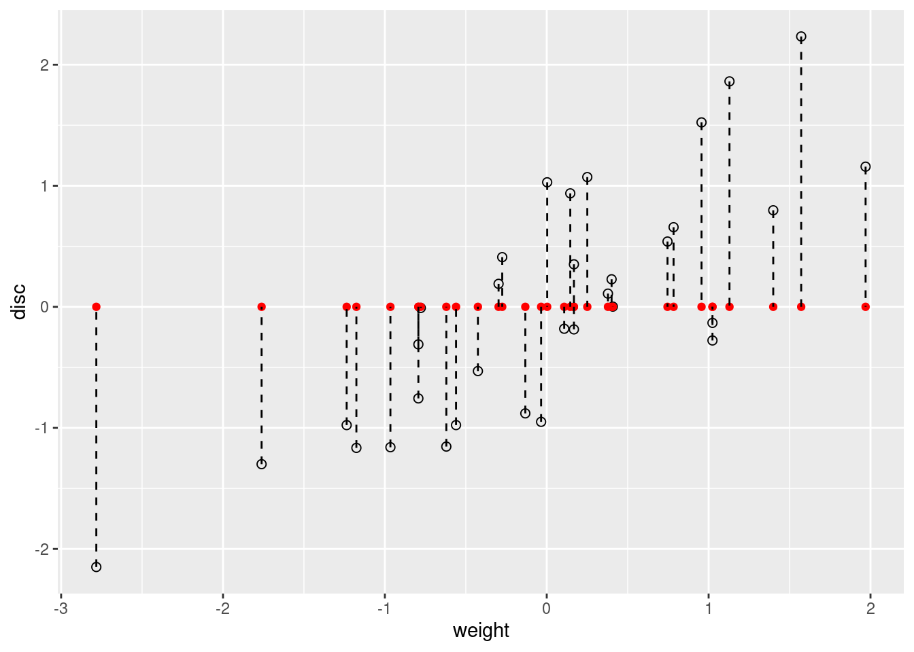
The scatterplot shows two variables (weight and disc) that is projected onto the horizontal x-axis (defined by \(y = 0\)) in red, and the lines of projection appear as dashed.
How do we summarise two-dimensional data by a line?
In general, we lose information about the points when we project from two dimensions (a plane) onto one (a line). If we do it just by using the original coordinates, as we did on the weight variable above, we lose all the information about the disc variable.
Our goal is to keep as much information as we can about both variables. There are actually many ways of projecting a point cloud onto a line. One is to use what are known as regressionlines.
Regressing one variable on the other
Linear regression is a supervised method that gives preference to minimising the residual sum of squares in one direction: that of the response variable.
Below we use the lm (linear model) function to find the regression line. Its slope and intercept are given by the values in the coefficients slot of the resulting object reg1.
reg1 = lm(disc ~ weight, data = athletes)
a1 = reg1$coefficients[1] # intercept
b1 = reg1$coefficients[2] # slope
pline1 = ath_gg + geom_abline(intercept = a1, slope = b1,
col = "blue", linewidth = 1.5)
pline1 + geom_segment(aes(xend = weight, yend = reg1$fitted),
colour = "red", arrow = arrow(length = unit(0.15, "cm")))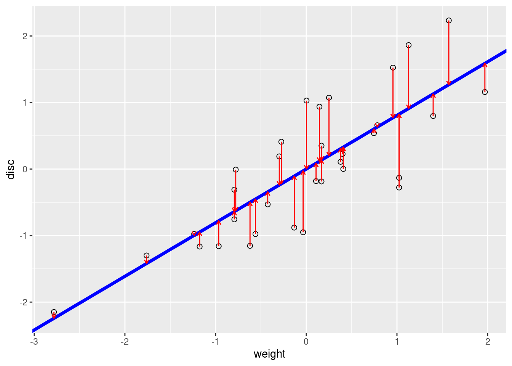
The blue line minimises the sum of squares of the vertical residuals (in red).
The code below shows the line produced when the roles of the two variables are reversed; weight becomes the response variable.
reg2 = lm(weight ~ disc, data = athletes)
a2 = reg2$coefficients[1] # intercept
b2 = reg2$coefficients[2] # slope
pline2 = ath_gg + geom_abline(intercept = -a2/b2, slope = 1/b2,
col = "darkgreen", linewidth = 1.5)
pline2 + geom_segment(aes(xend=reg2$fitted, yend=disc),
colour = "orange", arrow = arrow(length = unit(0.15, "cm")))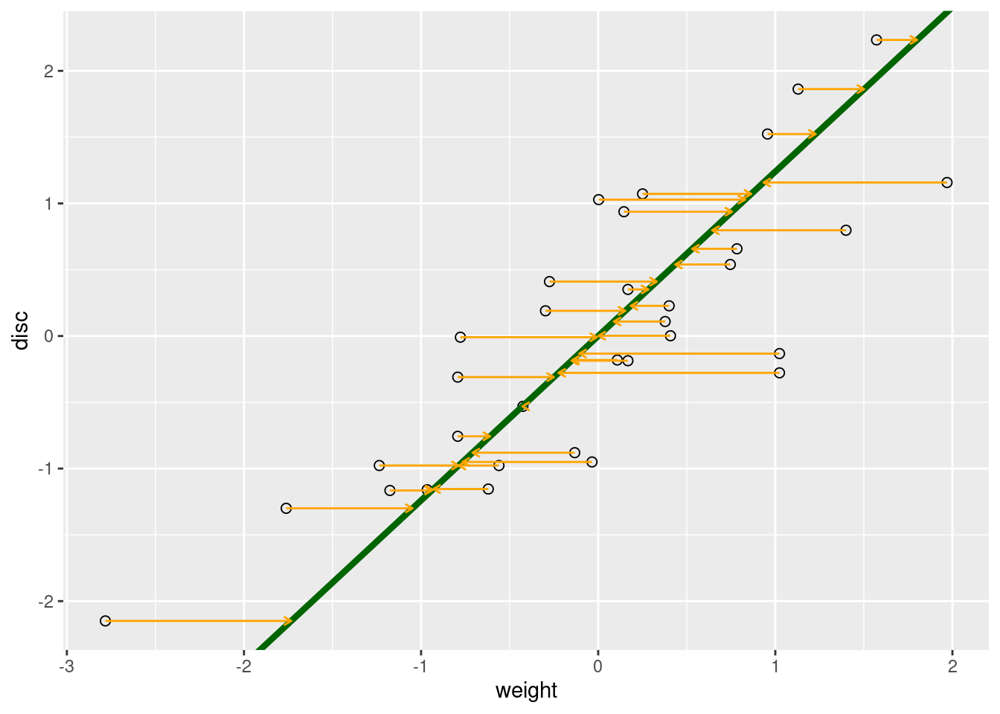
The green line minimises the sum of squares of the horizontal residuals (in orange).
Each of the regression lines gives us an approximate linear relationship between disc and weight. However, the relationship differs depending on which variable we choose to be the predictor and which the response.
How large is the variance of the projected points that lie on the blue regression line? Compare this to the variance of the data when projected on the original axes, weight and disc.
Pythagoras’ theorem tells us that the square of the hypotenuse of a right-angled triangle is equal to the sum of the squares of the other two sides, which we apply as follows.
var(athletes$weight) + var(reg1$fitted)[1] 1.650204The variances of the points along the original axes weight and disc are 1, since we scaled the variables.
Variance of the projected points that lie on the green regression line.
var(athletes$disc) + var(reg2$fitted)[1] 1.650204A line that minimises distance in both directions
The code below generates a line that minimises the sum of squares of the orthogonal (perpendicular) projections of data points onto it; we call this the principal component line.
stopifnot(all.equal(c(var(athletes$weight), var(athletes$disc)), c(1,1)))
xy = cbind(athletes$disc, athletes$weight)
svda = svd(xy)
pc = xy %*% svda$v[, 1] %*% t(svda$v[, 1])
bp = svda$v[2, 1] / svda$v[1, 1]
ap = mean(pc[, 2]) - bp * mean(pc[, 1])
ath_gg + geom_segment(xend = pc[, 1], yend = pc[, 2]) +
geom_abline(intercept = ap, slope = bp, col = "purple", linewidth = 1.5)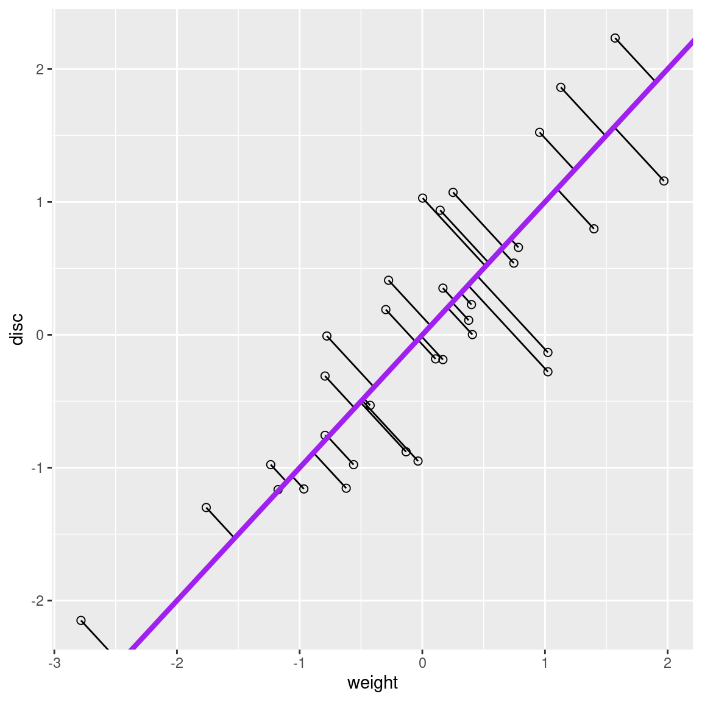
All of the three ways of fitting a line are shown together in the plot below.
pline1 + geom_segment(aes(xend = weight, yend = reg1$fitted), colour = "blue", alpha = 0.35) +
geom_abline(intercept = -a2/b2, slope = 1/b2, col = "darkgreen", linewidth = 1.5, alpha = 0.8) +
geom_segment(aes(xend = reg2$fitted, yend = disc), colour = "orange", alpha = 0.35) +
geom_abline(intercept = ap, slope = bp, col = "purple", linewidth = 1.5, alpha = 0.8) +
geom_segment(xend = pc[, 1], yend = pc[, 2], colour = "purple", alpha = 0.35) + coord_fixed()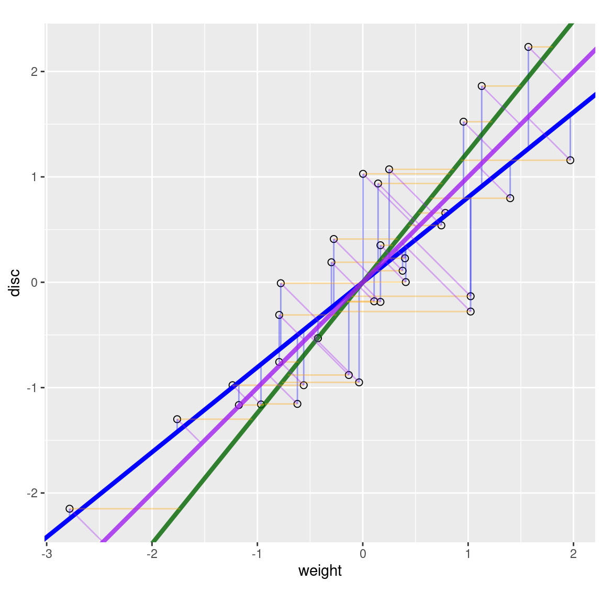
The purple PCA line cuts exactly in the middle of both regression lines. The blue line minimises the sum of squares of the vertical residuals, the green line minimises the horizontal residuals, and the purple line, called the principal component, minimises the orthogonal projections.
The variance of the points on the purple line can be calculated by using var on the new coordinates.
apply(pc, 2, var)[1] 0.9031761 0.9031761sum(apply(pc, 2, var))[1] 1.806352The variance along the purple line is larger than the variance using the regression lines.
Pythagoras’ theorem tells us two interesting things here:
- If we are minimising in both horizontal and vertical directions, we are in fact minimising the orthogonal projections onto the line from each point.
- The total variability of the points is measured by the sum of squares of the projection of the points onto the center of gravity, which is the origin (0,0) if the data are centered. This is called the total variance or the inertia of the point cloud. This inertia can be decomposed into the sum of the squares of the projections onto the line plus the variances along that line. For a fixed variance, minimising the projection distances also maximises the variance along that line. Often we define the first principal component as the line with maximum variance.
The new linear combinations
The PC line we found in the previous section could be written:
\[ PC = \frac{1}{2}disc + \frac{1}{2}weight \]
Principal components are linear combinations of the variables that were originally measured: they provide a new coordinate system. To understand what a linear combination really is, we can take an analogy. When making a juice mix, you will follow a recipe like:
\[ V = 2 \times Beet + 1 \times Carrot + \frac{1}{2} Gala + \frac{1}{2}GrannySmith + 0.02 \times Ginger + 0.25 \times lemon \]
This recipe is a linear combination of individual juice types (the original variables). The result is a new variable, V, and the coefficients (2, 1, 0.5, 0.5, 0.02, 0.25) are called the loadings.
Optimal lines
A linear combination of variables defines a line in higher dimensions in the same way we constructed lines in the scatterplot plane of two dimensions. As we saw in that case, there are many ways to choose lines onto which we project the data; there is, however, a “best” line for our purpose.
The total variance of all the points in all the variables can be decomposed. In PCA, we use the fact that the total sums of squares of the distances between the points and any line can be decomposed into the distance to the line and the variance along the line.
We saw that the principal component mimimises the distance to the line, and it also maximises the variance of the projections along the line.
The PCA workflow
.savedopt = options(digits = 3)
X = matrix(c(780, 75, 540,
936, 90, 648,
1300, 125, 900,
728, 70, 504), nrow = 3)
u = c(0.8196, 0.0788, 0.5674)
v = c(0.4053, 0.4863, 0.6754, 0.3782)
s1 = 2348.2
sum(u^2)[1] 1sum(v^2)[1] 1s1 * u %*% t(v) [,1] [,2] [,3] [,4]
[1,] 780 936 1300 728
[2,] 75 90 125 70
[3,] 540 648 900 504X - s1 * u %*% t(v) [,1] [,2] [,3] [,4]
[1,] -0.03419 0.0745 0.1355 0.1221
[2,] 0.00403 0.0159 0.0252 0.0186
[3,] -0.00903 0.0691 0.1182 0.0982options(.savedopt)svd(X)$u[, 1][1] 0.81963482 0.07881104 0.56743949svd(X)$v[, 1][1] 0.4052574 0.4863089 0.6754290 0.3782403sum(svd(X)$u[, 1]^2)[1] 1sum(svd(X)$v[, 1]^2)[1] 1svd(X)$d[1] 2.348244e+03 2.141733e-13 6.912584e-15Xtwo = matrix(c(12.5, 35.0, 25.0, 25, 9, 14, 26, 18, 16, 21, 49, 32,
18, 28, 52, 36, 18, 10.5, 64.5, 36), ncol = 4, byrow = TRUE)
USV = svd(Xtwo)
names(USV)[1] "d" "u" "v"USV$d[1] 1.350624e+02 2.805191e+01 3.103005e-15 1.849559e-15Xtwo - USV$d[1] * USV$u[, 1] %*% t(USV$v[, 1]) [,1] [,2] [,3] [,4]
[1,] 0.87481760 19.045230 -10.1044650 1.74963521
[2,] 0.08079747 1.759002 -0.9332405 0.16159494
[3,] -0.04700978 -1.023427 0.5429803 -0.09401956
[4,] 0.16159494 3.518005 -1.8664809 0.32318987
[5,] -0.69632883 -15.159437 8.0428540 -1.39265765Xtwo - USV$d[1] * USV$u[, 1] %*% t(USV$v[, 1]) -
USV$d[2] * USV$u[, 2] %*% t(USV$v[, 2]) [,1] [,2] [,3] [,4]
[1,] 7.216450e-15 -1.065814e-14 8.881784e-15 4.884981e-15
[2,] 2.040035e-15 -5.995204e-15 1.054712e-14 3.219647e-15
[3,] 2.865763e-15 -9.547918e-15 1.554312e-15 6.231127e-15
[4,] 4.385381e-15 -5.773160e-15 1.776357e-14 7.049916e-15
[5,] 5.107026e-15 -1.776357e-15 1.776357e-14 1.776357e-14stopifnot(max(abs(
Xtwo - USV$d[1] * USV$u[, 1] %*% t(USV$v[, 1]) -
USV$d[2] * USV$u[, 2] %*% t(USV$v[, 2]))) < 1e-12,
max(abs(USV$d[3:4])) < 1e-13)t(USV$u) %*% USV$u [,1] [,2] [,3] [,4]
[1,] 1.000000e+00 -1.665335e-16 0.000000e+00 -8.326673e-17
[2,] -1.665335e-16 1.000000e+00 1.665335e-16 -5.551115e-17
[3,] 0.000000e+00 1.665335e-16 1.000000e+00 -5.551115e-17
[4,] -8.326673e-17 -5.551115e-17 -5.551115e-17 1.000000e+00t(USV$v) %*% USV$v [,1] [,2] [,3] [,4]
[1,] 1.000000e+00 8.326673e-17 1.387779e-17 -5.551115e-17
[2,] 8.326673e-17 1.000000e+00 -3.642919e-17 -6.938894e-17
[3,] 1.387779e-17 -3.642919e-17 1.000000e+00 2.775558e-17
[4,] -5.551115e-17 -6.938894e-17 2.775558e-17 1.000000e+00turtles.svd = svd(scaledTurtles)
turtles.svd$d[1] 11.746475 1.419035 1.003329turtles.svd$v [,1] [,2] [,3]
[1,] 0.5787981 0.3250273 0.74789704
[2,] 0.5779840 0.4834699 -0.65741263
[3,] 0.5752628 -0.8127817 -0.09197088dim(turtles.svd$u)[1] 48 3sum(turtles.svd$v[,1]^2)[1] 1sum(turtles.svd$d^2) / 47[1] 3stopifnot(max(abs(turtles.svd$v[,1]^2 - 1/3)) < 0.01)
US = turtles.svd$u[,1, drop = FALSE] %*% turtles.svd$d[1]
XV = scaledTurtles %*% turtles.svd$v[, 1, drop = FALSE]
max(abs(US-XV))[1] 2.88658e-15stopifnot(max(abs(US-XV)) < 1e-9)svda$v[,1][1] -0.7071068 -0.7071068ppdf = tibble::tibble(PC1n = -svda$u[, 1] * svda$d[1],
PC2n = svda$u[, 2] * svda$d[2])
gg = ggplot(ppdf, aes(x = PC1n, y = PC2n)) +
geom_point() +
geom_hline(yintercept = 0, color = "purple", linewidth = 1.5, alpha = 0.5) +
xlab("PC1 ")+ ylab("PC2") + xlim(-3.5, 2.7) + ylim(-2, 2) + coord_fixed()
gg + geom_point(aes(x = PC1n, y = 0), color = "red") +
geom_segment(aes(xend = PC1n, yend = 0), color = "red") 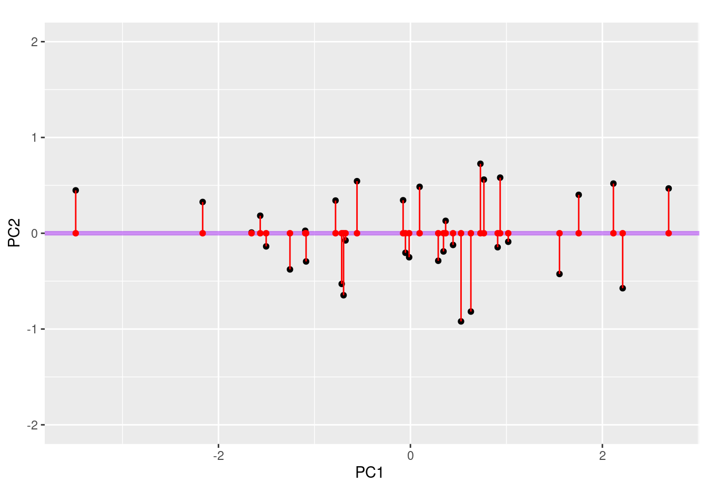
gg + geom_point(aes(x = 0, y = PC2n), color = "blue") +
geom_segment(aes(yend = PC2n, xend = 0), color = "blue") +
geom_vline(xintercept = 0, color = "skyblue", linewidth = 1.5, alpha = 0.5) 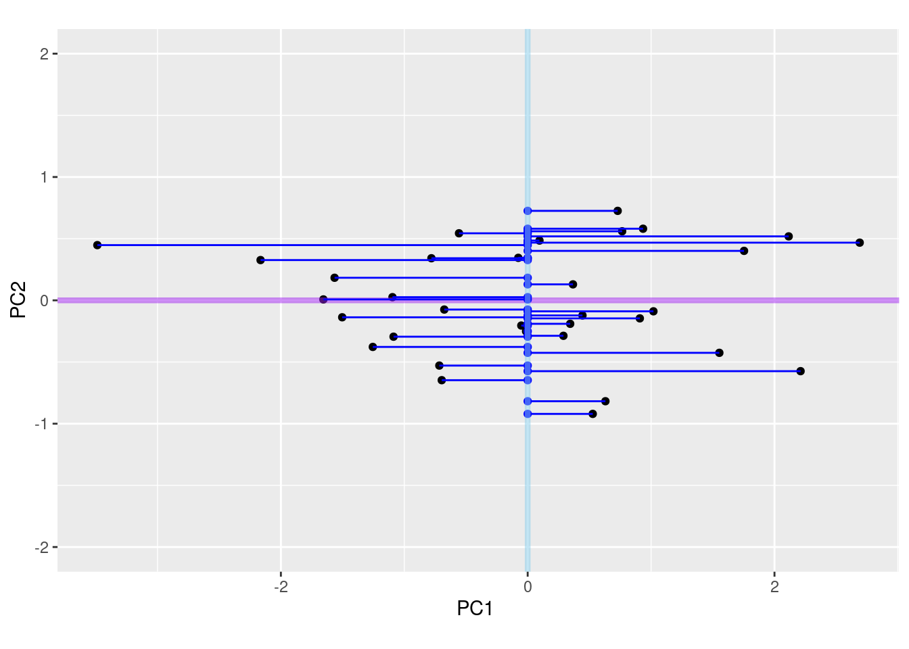
sum(ppdf$PC2n^2) [1] 6.196729svda$d[2]^2[1] 6.196729stopifnot(abs(sum(ppdf$PC2n^2) - svda$d[2]^2)<1e-9)mean(ppdf$PC2n) [1] 5.735068e-16var(ppdf$PC2n) * (nrow(ppdf)-1)[1] 6.196729stopifnot(abs(var(ppdf$PC2n) * (nrow(ppdf)-1) - svda$d[2]^2) < 1e-9, abs(mean(ppdf$PC2n)) < 1e-9)var(ppdf$PC1n) [1] 1.806352var(ppdf$PC2n) [1] 0.1936478stopifnot(var(ppdf$PC1n) > var(ppdf$PC2n))sd(ppdf$PC1n) / sd(ppdf$PC2n)[1] 3.054182svda$d[1] / svda$d[2][1] 3.054182stopifnot(sd(ppdf$PC1n) / sd(ppdf$PC2n) - svda$d[1] / svda$d[2] < 1e-9)cor(scaledTurtles) length width height
length 1.0000000 0.9783116 0.9646946
width 0.9783116 1.0000000 0.9605705
height 0.9646946 0.9605705 1.0000000pcaturtles = princomp(scaledTurtles)
pcaturtlesCall:
princomp(x = scaledTurtles)
Standard deviations:
Comp.1 Comp.2 Comp.3
1.6954576 0.2048201 0.1448180
3 variables and 48 observations.library("factoextra")Welcome! Want to learn more? See two factoextra-related books at https://goo.gl/ve3WBafviz_eig(pcaturtles, geom = "bar", bar_width = 0.4) + ggtitle("")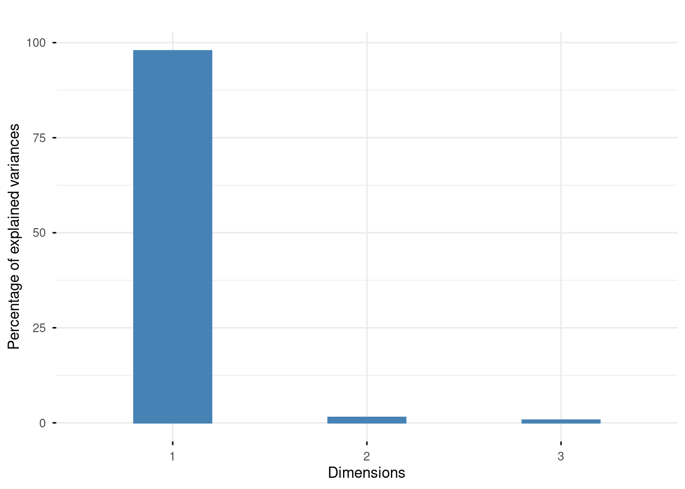
svd(scaledTurtles)$v[, 1]
prcomp(turtles[, -1])$rotation[, 1]
princomp(scaledTurtles)$loadings[, 1]
library("ade4")
dudi.pca(turtles[, -1], nf = 2, scannf = FALSE)$c1[, 1]res = princomp(scaledTurtles)
PC1 = scaledTurtles %*% res$loadings[,1]
sd1 = sqrt(mean(res$scores[, 1]^2))library("ade4")
Attaching package: 'ade4'The following object is masked from 'package:GenomicRanges':
scoreThe following object is masked from 'package:BiocGenerics':
scorelibrary("tibble")
fviz_pca_biplot(pcaturtles, label = "var", habillage = turtles[, 1]) +
ggtitle("")Warning: Using `size` aesthetic for lines was deprecated in ggplot2 3.4.0.
ℹ Please use `linewidth` instead.
ℹ The deprecated feature was likely used in the ggpubr package.
Please report the issue at <https://github.com/kassambara/ggpubr/issues>.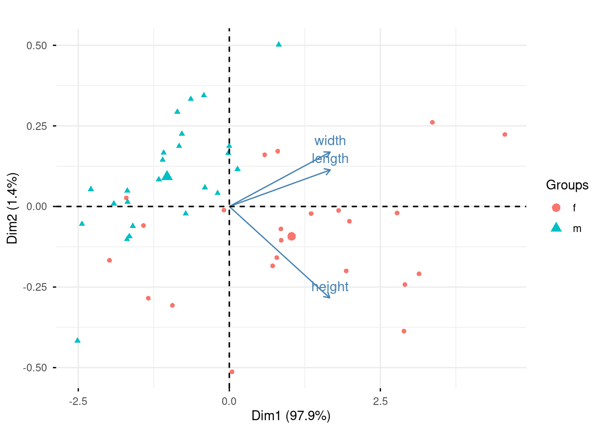
pcadudit = dudi.pca(scaledTurtles, nf = 2, scannf = FALSE)
apply(pcadudit$li, 2, function(x) sum(x^2)/48) Axis1 Axis2
2.93573765 0.04284387 pcadudit$eig[1] 2.93573765 0.04284387 0.02141848fviz_pca_var(pcaturtles, col.circle = "black") + ggtitle("") +
xlim(c(-1.2, 1.2)) + ylim(c(-1.2, 1.2))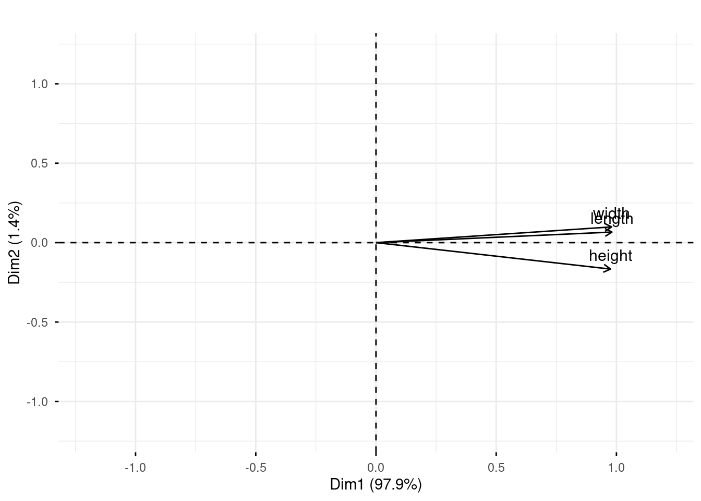
svd(scaledTurtles)$d/pcaturtles$sdev Comp.1 Comp.2 Comp.3
6.928203 6.928203 6.928203 sqrt(47)[1] 6.855655cor(athletes) |> round(1) m100 long weight highj m400 m110 disc pole javel m1500
m100 1.0 -0.5 -0.2 -0.1 0.6 0.6 0.0 -0.4 -0.1 0.3
long -0.5 1.0 0.1 0.3 -0.5 -0.5 0.0 0.3 0.2 -0.4
weight -0.2 0.1 1.0 0.1 0.1 -0.3 0.8 0.5 0.6 0.3
highj -0.1 0.3 0.1 1.0 -0.1 -0.3 0.1 0.2 0.1 -0.1
m400 0.6 -0.5 0.1 -0.1 1.0 0.5 0.1 -0.3 0.1 0.6
m110 0.6 -0.5 -0.3 -0.3 0.5 1.0 -0.1 -0.5 -0.1 0.1
disc 0.0 0.0 0.8 0.1 0.1 -0.1 1.0 0.3 0.4 0.4
pole -0.4 0.3 0.5 0.2 -0.3 -0.5 0.3 1.0 0.3 0.0
javel -0.1 0.2 0.6 0.1 0.1 -0.1 0.4 0.3 1.0 0.1
m1500 0.3 -0.4 0.3 -0.1 0.6 0.1 0.4 0.0 0.1 1.0pca.ath = dudi.pca(athletes, scannf = FALSE)
pca.ath$eig [1] 3.4182381 2.6063931 0.9432964 0.8780212 0.5566267 0.4912275 0.4305952
[8] 0.3067981 0.2669494 0.1018542fviz_eig(pca.ath, geom = "bar", bar_width = 0.3) + ggtitle("")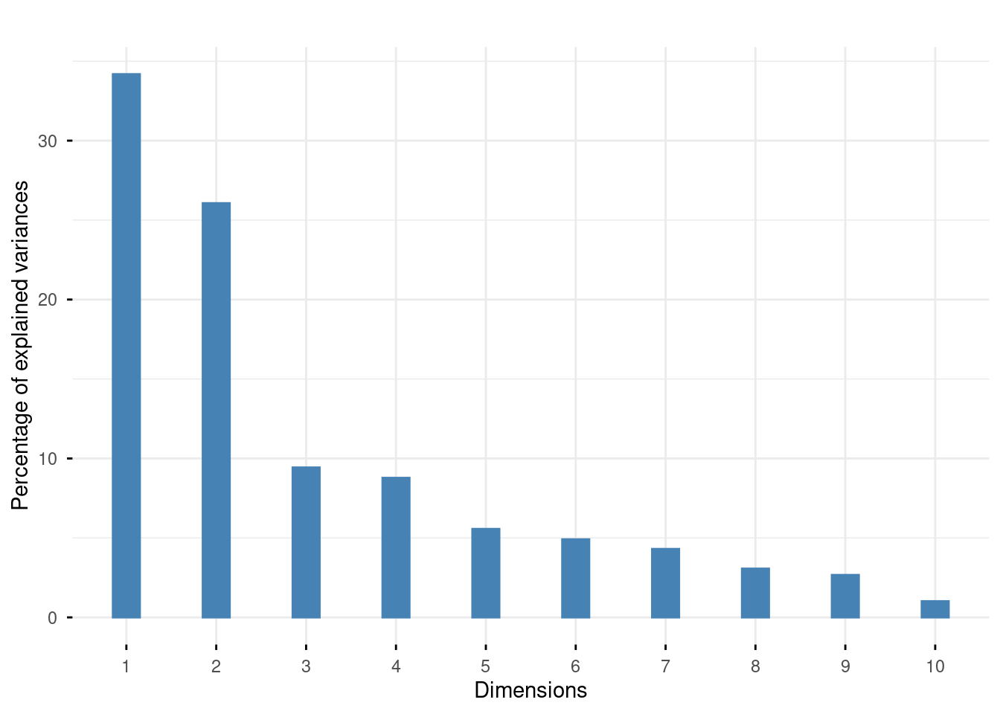
fviz_pca_var(pca.ath, col.circle = "black") + ggtitle("")Warning: `aes_string()` was deprecated in ggplot2 3.0.0.
ℹ Please use tidy evaluation idioms with `aes()`.
ℹ See also `vignette("ggplot2-in-packages")` for more information.
ℹ The deprecated feature was likely used in the factoextra package.
Please report the issue at <https://github.com/kassambara/factoextra/issues>.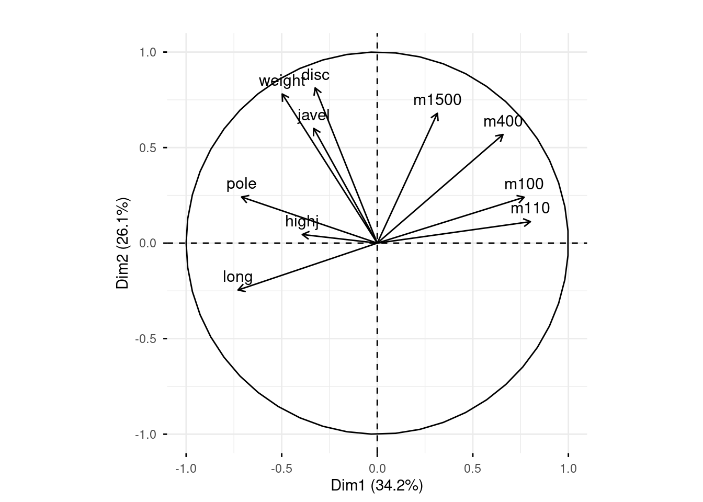
athletes[, c(1, 5, 6, 10)] = -athletes[, c(1, 5, 6, 10)]
cor(athletes) |> round(1) m100 long weight highj m400 m110 disc pole javel m1500
m100 1.0 0.5 0.2 0.1 0.6 0.6 0.0 0.4 0.1 0.3
long 0.5 1.0 0.1 0.3 0.5 0.5 0.0 0.3 0.2 0.4
weight 0.2 0.1 1.0 0.1 -0.1 0.3 0.8 0.5 0.6 -0.3
highj 0.1 0.3 0.1 1.0 0.1 0.3 0.1 0.2 0.1 0.1
m400 0.6 0.5 -0.1 0.1 1.0 0.5 -0.1 0.3 -0.1 0.6
m110 0.6 0.5 0.3 0.3 0.5 1.0 0.1 0.5 0.1 0.1
disc 0.0 0.0 0.8 0.1 -0.1 0.1 1.0 0.3 0.4 -0.4
pole 0.4 0.3 0.5 0.2 0.3 0.5 0.3 1.0 0.3 0.0
javel 0.1 0.2 0.6 0.1 -0.1 0.1 0.4 0.3 1.0 -0.1
m1500 0.3 0.4 -0.3 0.1 0.6 0.1 -0.4 0.0 -0.1 1.0pcan.ath = dudi.pca(athletes, nf = 2, scannf = FALSE)
pcan.ath$eig [1] 3.4182381 2.6063931 0.9432964 0.8780212 0.5566267 0.4912275 0.4305952
[8] 0.3067981 0.2669494 0.1018542fviz_pca_var(pcan.ath, col.circle="black") + ggtitle("")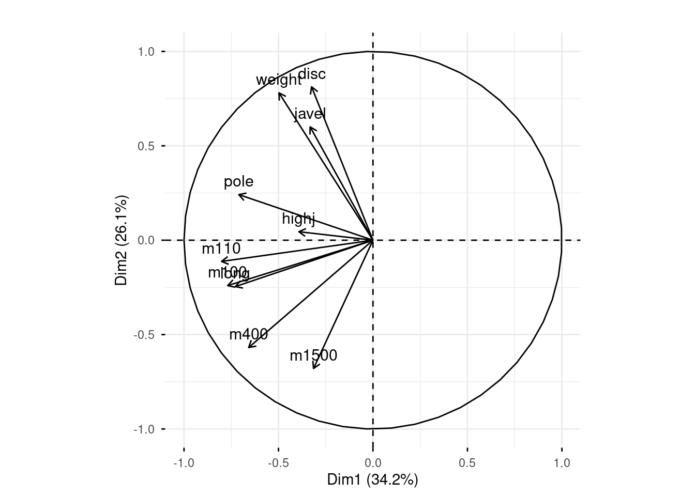
fviz_pca_ind(pcan.ath) + ggtitle("") + ylim(c(-2.5,5.7))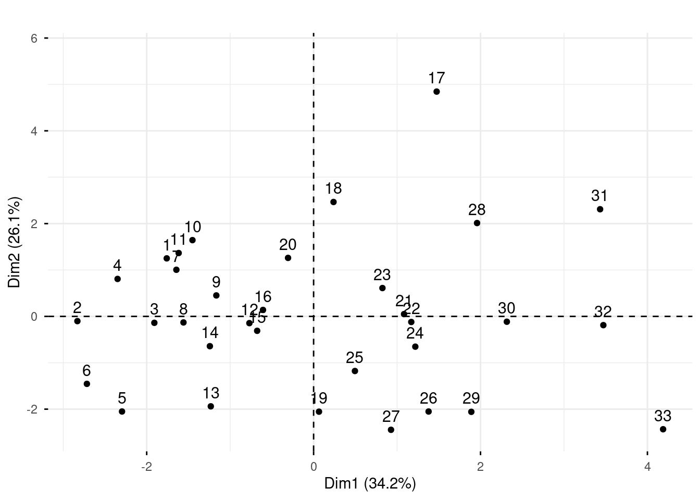
data("olympic", package = "ade4")
olympic$score [1] 8488 8399 8328 8306 8286 8272 8216 8189 8180 8167 8143 8114 8093 8083 8036
[16] 8021 7869 7860 7859 7781 7753 7745 7743 7623 7579 7517 7505 7422 7310 7237
[31] 7231 7016 6907p = ggplot(tibble(pc1 = pcan.ath$li[, 1], score = olympic$score, id = rownames(athletes)),
aes(x = score, y = pc1, label = id)) + geom_text()
p + stat_smooth(method = "lm", se = FALSE)`geom_smooth()` using formula = 'y ~ x'Warning: The following aesthetics were dropped during statistical transformation: label.
ℹ This can happen when ggplot fails to infer the correct grouping structure in
the data.
ℹ Did you forget to specify a `group` aesthetic or to convert a numerical
variable into a factor?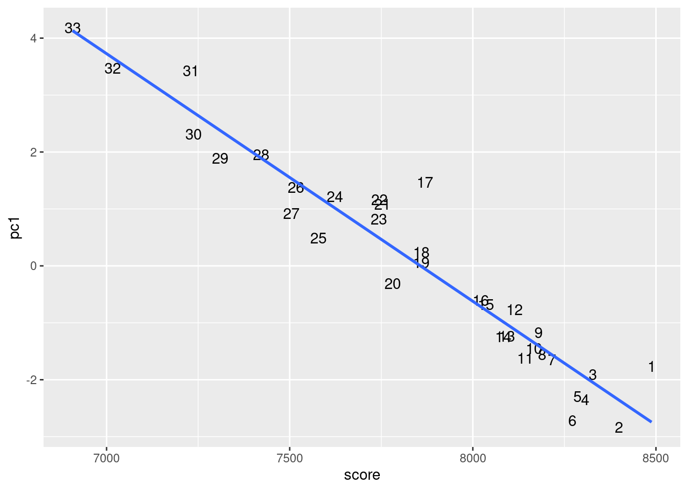
load("../data/screep7.RData")
pcaS7 = dudi.pca(screep7, scannf = FALSE)
fviz_eig(pcaS7,geom="bar",bar_width=0.5) + ggtitle("")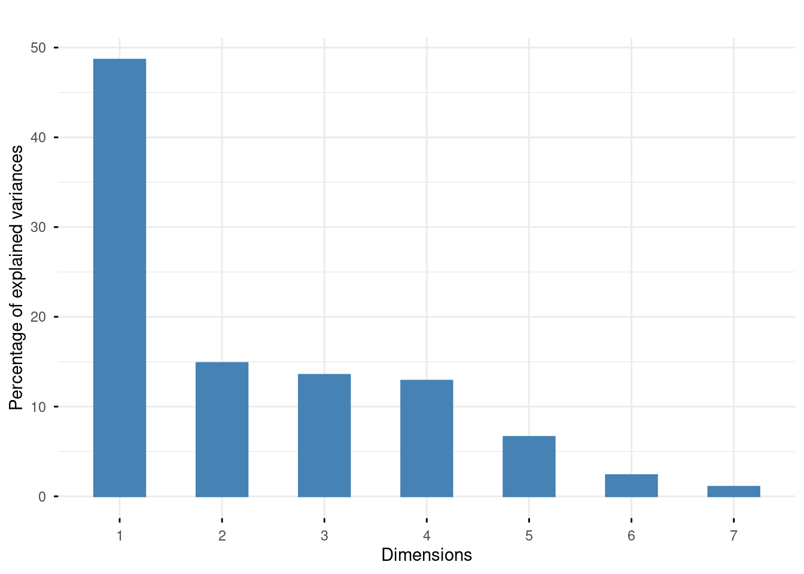
#problem with dudi and prcomp eigenvalues
#prcomp does not scale by default, dudi.pca does
#fviz_eig(pcaS7,geom="bar",width=0.3)
#p7=prcomp(screep7,scale= TRUE)
#p7$sdev^2
#plot(p7)
pcaMsig3 = dudi.pca(Msig3transp, center = TRUE, scale = TRUE,
scannf = FALSE, nf = 4)
fviz_screeplot(pcaMsig3) + ggtitle("")Warning in geom_bar(stat = "identity", fill = barfill, color = barcolor, :
Ignoring empty aesthetic: `width`.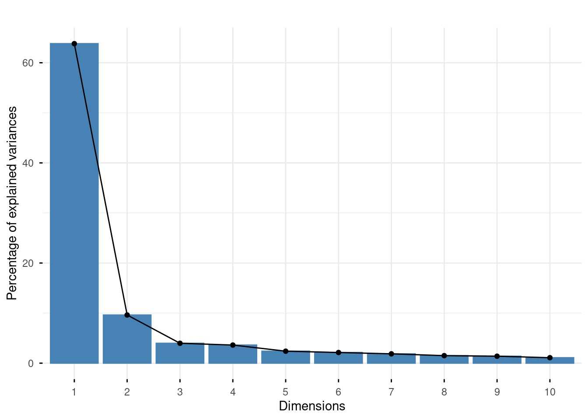
ids = rownames(Msig3transp)
celltypes = factor(substr(ids, 7, 9))
status = factor(substr(ids, 1, 3))
table(celltypes)celltypes
EFF MEM NAI
10 9 11 cbind(pcaMsig3$li, tibble(Cluster = celltypes, sample = ids)) |>
ggplot(aes(x = Axis1, y = Axis2)) +
geom_point(aes(color = Cluster), size = 5) +
geom_hline(yintercept = 0, linetype = 2) +
geom_vline(xintercept = 0, linetype = 2) +
scale_color_discrete(name = "Cluster") + coord_fixed()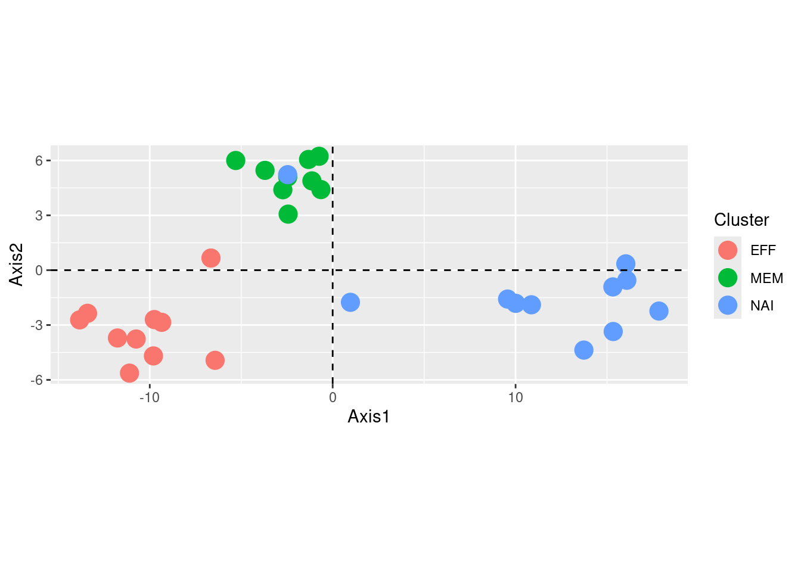
## # For the record:
## library("xcms")
## cdfpath = system.file("cdf", package = "faahKO")
## cdffiles = list.files(cdfpath, recursive = TRUE, full = TRUE)
## xset = xcmsSet(cdffiles)
## xset2 = group(xset)
## xset2 = retcor(xset2)
## xset2 = group(xset2, bw = 10)
## xset3 = fillPeaks(xset2)
## gt = groups(xset3)
## mat1 = groupval(xset3, value = "into")
load("../data/mat1xcms.RData")
dim(mat1)[1] 399 12pcamat1 = dudi.pca(t(mat1), scannf = FALSE, nf = 3)
fviz_eig(pcamat1, geom = "bar", bar_width = 0.7) + ggtitle("")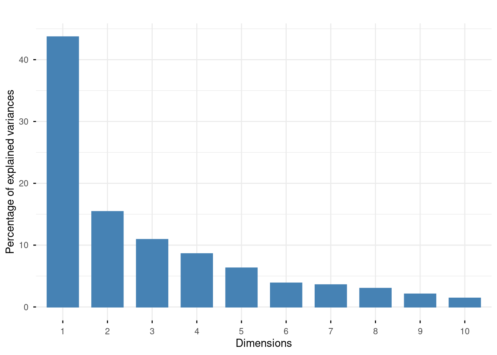
dfmat1 = cbind(pcamat1$li, tibble(
label = rownames(pcamat1$li),
number = substr(label, 3, 4),
type = factor(substr(label, 1, 2))))
pcsplot = ggplot(dfmat1,
aes(x=Axis1, y=Axis2, label=label, group=number, colour=type)) +
geom_text(size = 4, vjust = -0.5)+ geom_point(size = 3)+ylim(c(-18,19))
pcsplot + geom_hline(yintercept = 0, linetype = 2) +
geom_vline(xintercept = 0, linetype = 2)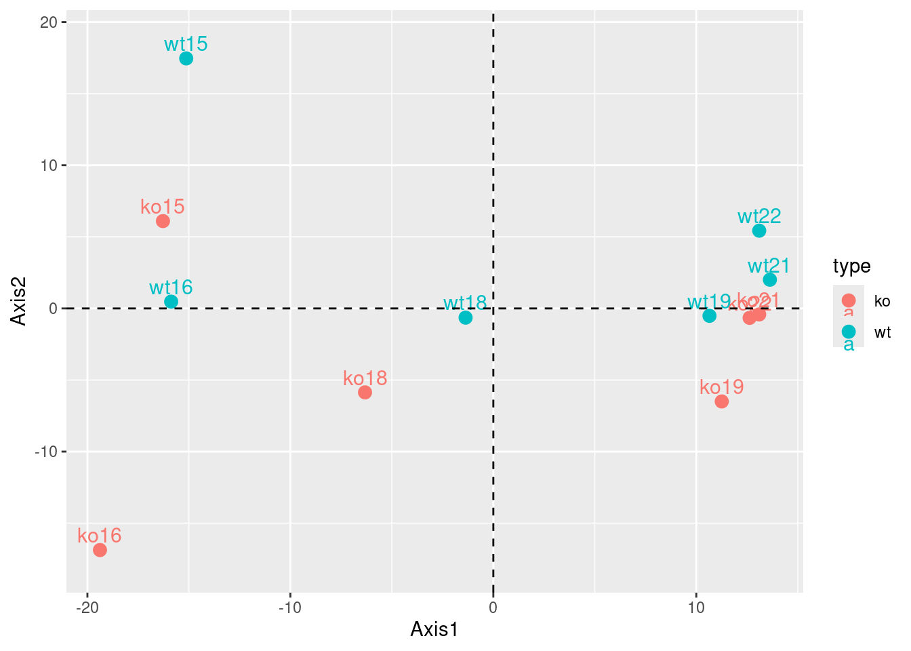
pcsplot + geom_line(colour = "red")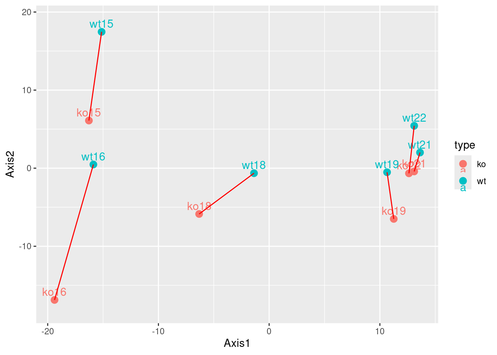
library("pheatmap")
load("../data/wine.RData")
load("../data/wineClass.RData")
wine[1:2, 1:7] Alcohol MalicAcid Ash AlcAsh Mg Phenols Flav
1 14.23 1.71 2.43 15.6 127 2.80 3.06
2 13.20 1.78 2.14 11.2 100 2.65 2.76pheatmap(1 - cor(wine), treeheight_row = 0.2)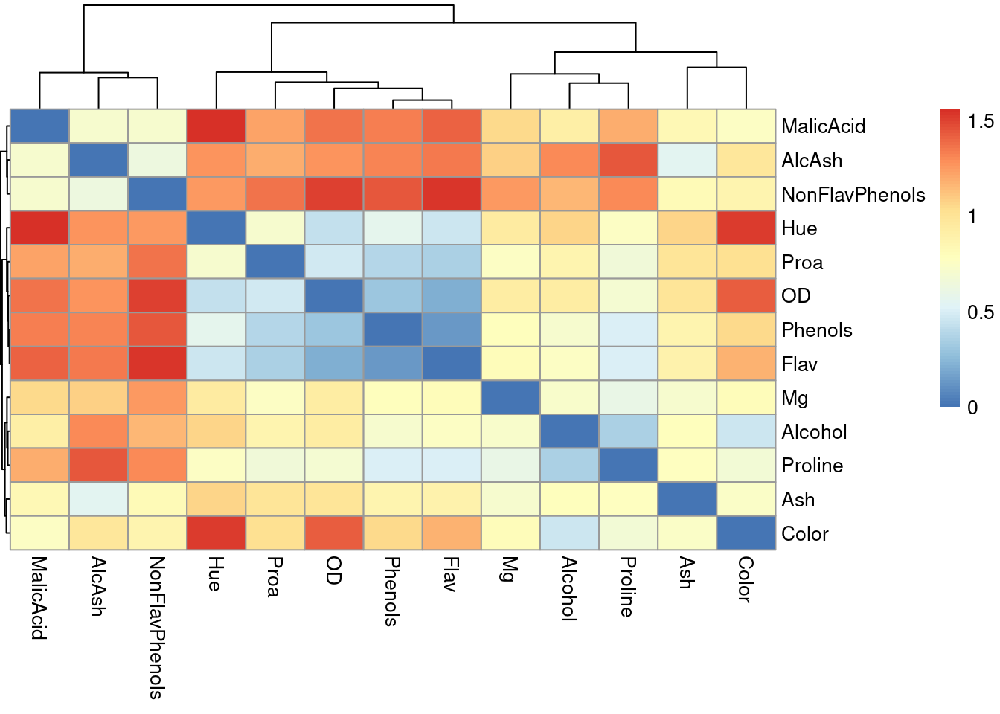
winePCAd = dudi.pca(wine, scannf=FALSE)
table(wine.class)wine.class
barolo grignolino barbera
59 71 48 fviz_pca_biplot(winePCAd, geom = "point", habillage = wine.class,
col.var = "violet", addEllipses = TRUE, ellipse.level = 0.69) +
ggtitle("") + coord_fixed()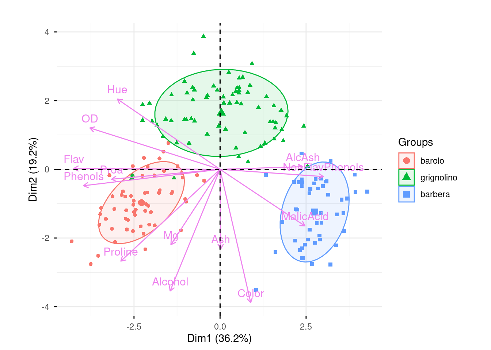
data("x", package = "Hiiragi2013")
xwt = x[, x$genotype == "WT"]
sel = order(rowVars(Biobase::exprs(xwt)), decreasing = TRUE)[1:100]
xwt = xwt[sel, ]
tab = table(xwt$sampleGroup)
tab
E3.25 E3.5 (EPI) E3.5 (PE) E4.5 (EPI) E4.5 (PE)
36 11 11 4 4 xwt$weight = 1 / as.numeric(tab[xwt$sampleGroup])
pcaMouse = dudi.pca(as.data.frame(t(Biobase::exprs(xwt))),
row.w = xwt$weight,
center = TRUE, scale = TRUE, nf = 2, scannf = FALSE)
fviz_eig(pcaMouse) + ggtitle("")Warning in geom_bar(stat = "identity", fill = barfill, color = barcolor, :
Ignoring empty aesthetic: `width`.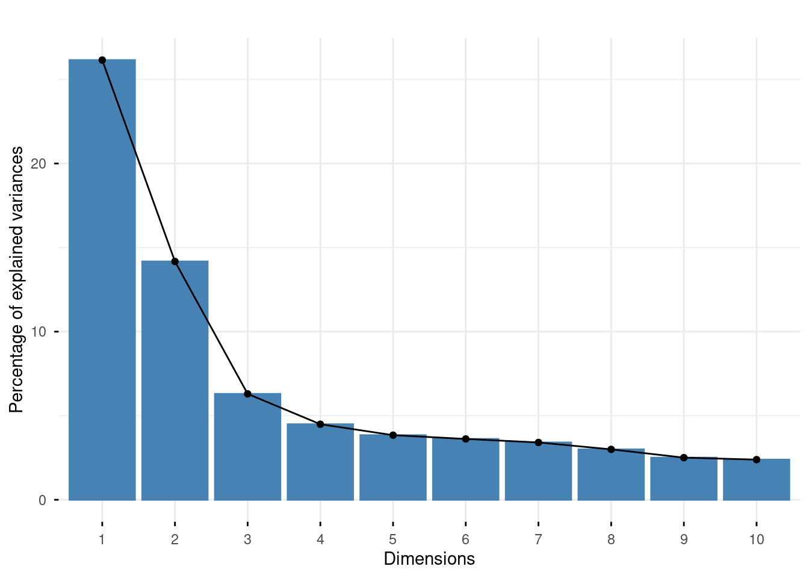
## fviz_pca_ind(pcaMouse, geom = "point", col.ind = xwt$sampleGroup) +
## ggtitle("") + coord_fixed()
# TODO: duplicate of the above to avoid overlap;
# can be removed once Quarto resolves this
fviz_pca_ind(pcaMouse, geom = "point", col.ind = xwt$sampleGroup) +
ggtitle("") + coord_fixed()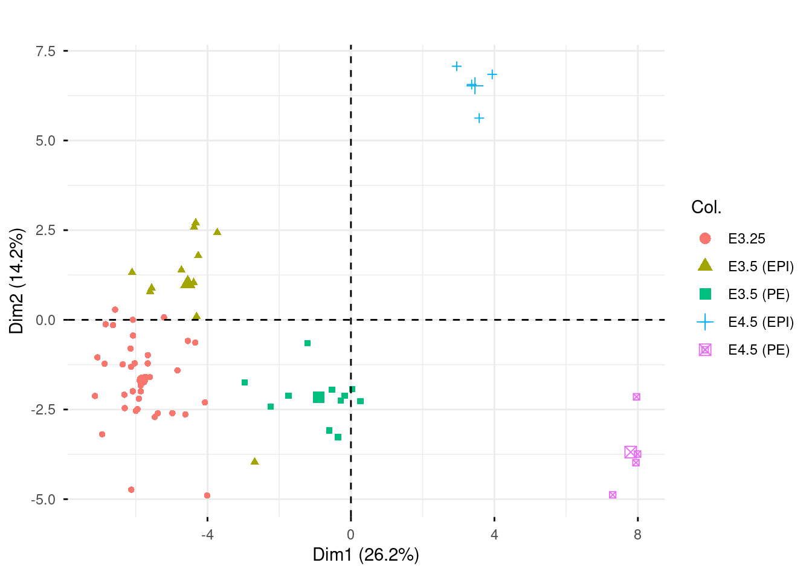
u = seq(2, 30, by = 2)
v = seq(3, 12, by = 3)
X1 = u %*% t(v)
Materr = matrix(rnorm(60,1),nrow=15,ncol=4)
X = X1+Materr
outer(u, v) [,1] [,2] [,3] [,4]
[1,] 6 12 18 24
[2,] 12 24 36 48
[3,] 18 36 54 72
[4,] 24 48 72 96
[5,] 30 60 90 120
[6,] 36 72 108 144
[7,] 42 84 126 168
[8,] 48 96 144 192
[9,] 54 108 162 216
[10,] 60 120 180 240
[11,] 66 132 198 264
[12,] 72 144 216 288
[13,] 78 156 234 312
[14,] 84 168 252 336
[15,] 90 180 270 360ggplot(data=data.frame(X), aes(x=X1, y=X2, col=X3, size=X4)) + geom_point()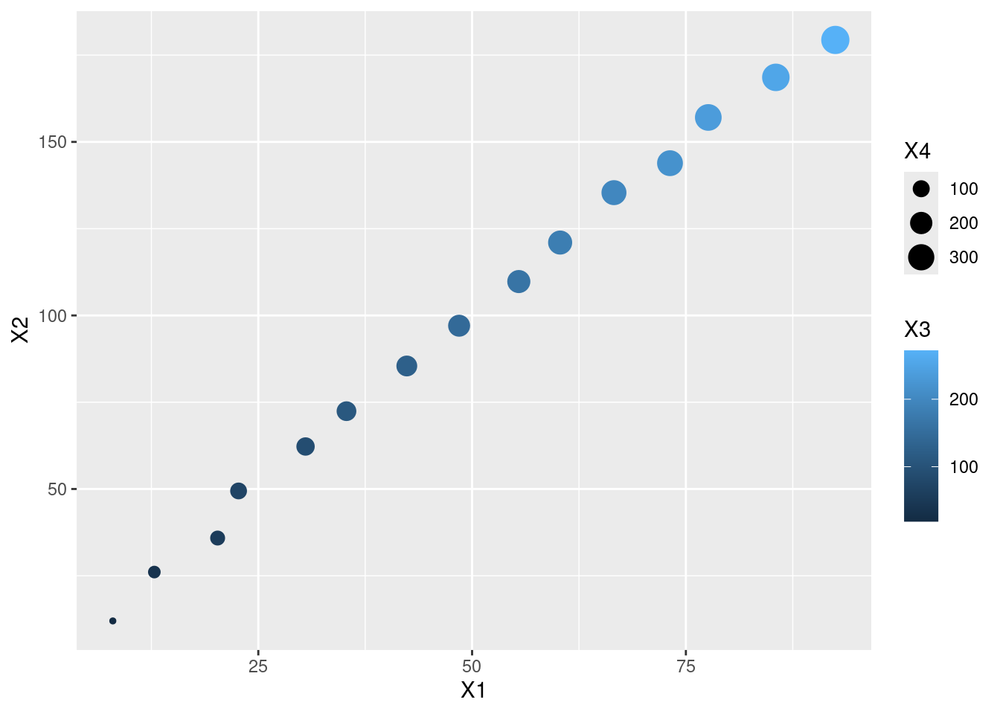
n = 100
p = 4
Y2 = outer(rnorm(n), rnorm(p)) + outer(rnorm(n), rnorm(p))
head(Y2) [,1] [,2] [,3] [,4]
[1,] -0.1015264 -1.2018744 -0.1195410 -1.2109954
[2,] 0.6183979 1.4116642 1.4748156 -0.3385532
[3,] -0.6578056 -1.2090886 -1.6057652 0.7420605
[4,] -0.4672680 -1.0598776 -1.1152444 0.2646805
[5,] -0.1821787 0.1713696 -0.5086848 0.8664406
[6,] -0.5857749 -2.8573348 -1.2049193 -1.6640022ggplot(data=data.frame(Y2), aes(x=X1, y=X2, col=X3, size=X4)) + geom_point()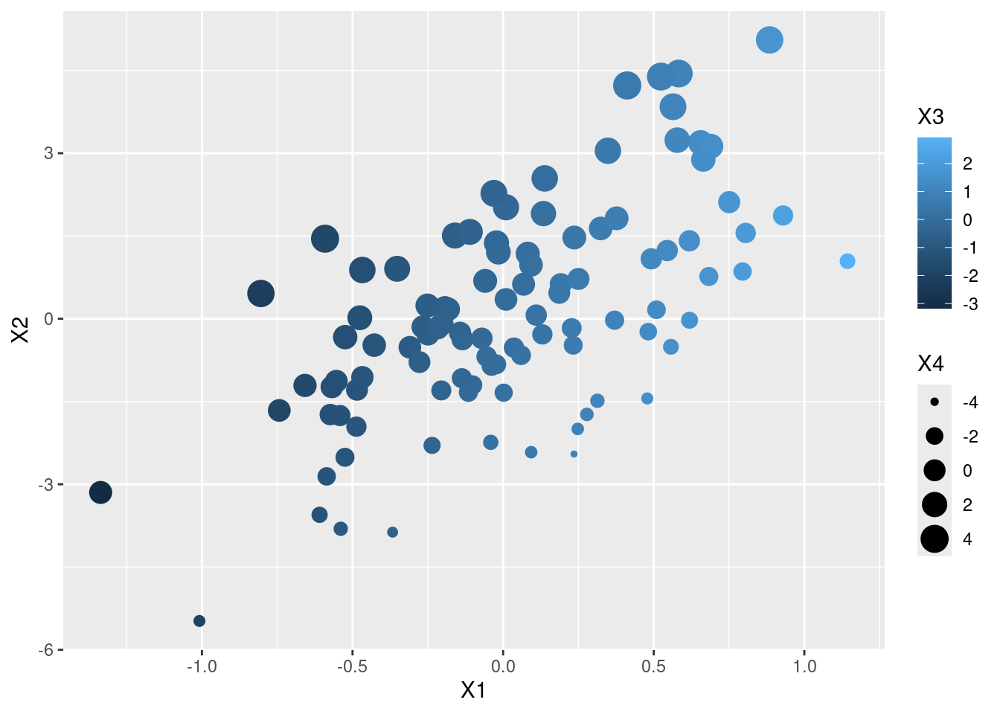
svd(Y2)$d # two non-zero eigenvalues[1] 2.577205e+01 1.507554e+01 2.457181e-15 5.708087e-16Y = Y2 + matrix(rnorm(n*p, sd=0.01),n,p) # add some noise to Y2
svd(Y)$d # four non-zero eigenvalues (but only 2 big ones)[1] 25.77159150 15.08360530 0.10578758 0.09180731library("MASS")
mu1 = 1; mu2 = 2; s1=2.5; s2=0.8; rho=0.9;
sigma = matrix(c(s1^2, s1*s2*rho, s1*s2*rho, s2^2),2)
sim2d = data.frame(mvrnorm(50, mu = c(mu1,mu2), Sigma = sigma))
svd(scale(sim2d))$d[1] 9.594338 2.438993svd(scale(sim2d))$v[,1][1] 0.7071068 0.7071068respc = princomp(sim2d)
dfpc = data.frame(pc1=respc$scores[,1],
pc2=respc$scores[,2])
ggplot(data.frame(sim2d), aes(x=X1,y=X2)) + geom_point()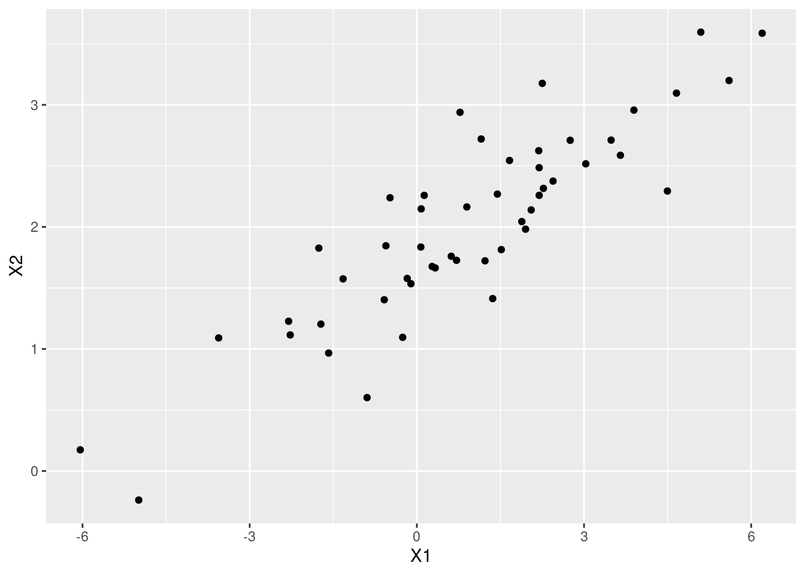
ggplot(dfpc, aes(x=pc1, y=pc2)) + geom_point() + coord_fixed(2)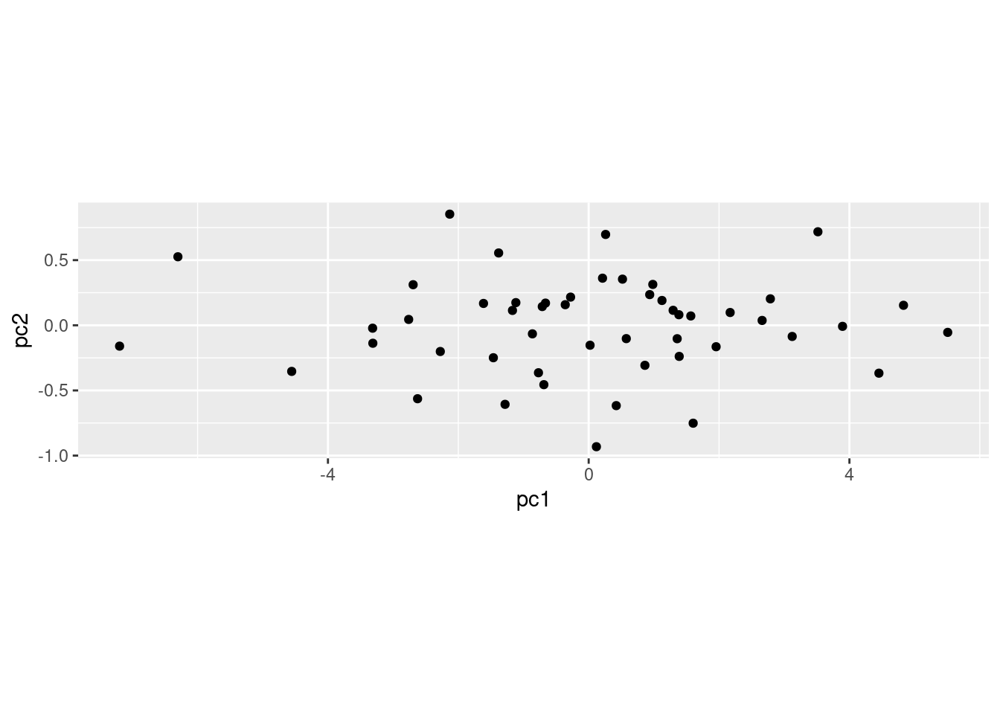
## require(vcd)
## uvec0=c(1,5.2,0.5,3.6)
## n=length(uvec0)-1
## vvec0=c(1,1.5,1.8,2.5,1.4)
## p=length(vvec0)-1
## rankone=function(uvec=uvec0,vvec=vvec0,factr=100){
## Xout=uvec%*%t(vvec)*factr
## n=length(uvec)
## p=length(vvec)
## dimnames(Xout)=list(U=c(" ",paste("u",1:(n-1),sep="")),V=c(" ",paste("v",1:(p-1),sep="")))
## return(Xout)
## }
##
## Xmat=rankone()
##
## makelabels=function(Xout=Xmat,step=0){
## tab=as.table(Xout)
## n=nrow(Xout)
## p=ncol(Xout)
## tab[1,1]=NA
## if (step==0){
## tab[1,]=rep(NA,p)
## tab[,1]=rep(NA,n)
## }
## return(tab)
## }
##
## tabf0=makelabels(Xmat,step=0)
## tabf1=makelabels(Xmat,step=1)
## Xsub=Xmat[-1,-1]
## dimnames(Xsub)=NULL
## rowns=paste("$x_{",1:n,".}$",sep="")
## colns=paste("$x_{.",1:p,"}$",sep="")
## dimnames(Xsub)=list(rowns,colns)
## require(xtable)
## xtab=xtable(Xsub,floating=FALSE,digits=0)
## xtab
## np = prod(dim(Xmat))
## rainbow_colors = colorspace::rainbow_hcl(np, c = 50, l = 70, start = 30, end = 360*(np-1)/np)
## mycols = rainbow_colors[1:np]
## mycols[c(1:(n+1), seq(n+2,(n+1)*(p+1),n+1))] = "white"
## Xmat0=Xmat
## #dimnames(Xmat0)=NULL
## mosaic(Xmat,pop=FALSE, gp = gpar(fill=matrix(mycols,ncol=p+1),fontsize=14))
## #tabf0
## #tabf1
## labeling_cells(text = tabf0,clip=FALSE,gp_labels = gpar(fontsize = 14))(tabf0)
## #labeling_border(labels =FALSE)
## tabf2=tabf1
## tabf2[-1,1]=0.1*tabf1[-1,1]
## tabf2[1,-1]=0.1*tabf1[1,-1]
## mosaic(Xmat,pop=FALSE, gp = gpar(fill=matrix(mycols,ncol=p+1),fontsize=14))
## labeling_cells(text = tabf2,clip=FALSE,gp_labels = gpar(fontsize = 14))(tabf2)
## tabf3=tabf1
## tabf3[-1,1]=0.05*tabf1[-1,1]
## tabf3[1,-1]=0.2*tabf1[1,-1]
## mosaic(Xmat,pop=FALSE, gp = gpar(fill=matrix(mycols,ncol=p+1),fontsize=14))
## labeling_cells(text = tabf3,clip=FALSE,gp_labels = gpar(fontsize = 14))(tabf3)
## USV=svd(Xsub)
## tabusv=tabf0
## tabusv[1,]=c(round(USV$d[1],1),round(USV$v[,1],1))
## tabusv[-1,1]=round(USV$u[,1],1)
## #dimnames(tabusv)[[1]][1]="s1"
## mosaic(Xmat,pop=FALSE, gp = gpar(fill=matrix(mycols,ncol=5),fontsize = 14))
## labeling_cells(text = tabusv,clip=FALSE,gp_labels = gpar(fontsize = 14))(tabusv)
## u2=c(5,2,3,4,1.5)
## v2=c(2,7,3,4)
## u3=c(0.5,1,2,2,3)
## v3=c(1,0,4,2)
## Xmat2=rankone(c(1,u2),c(1,v2),1)
## Xmat3=rankone(c(1,u3),c(1,v3),5)
## Xmat4=Xmat2+Xmat3
## tab3f0=makelabels(Xmat4,step=0)
## n=5;p=4;
## mycols[c(1:(n+1),seq(n+2,(n+1)*(p+1),n+1))]="white"
## mosaic(Xmat4,pop=FALSE, gp = gpar(fill=matrix(mycols,ncol=p+1),fontsize=14))
## labeling_cells(text = tab3f0,clip=FALSE,gp_labels = gpar(fontsize = 14))(tab3f0)
## tab3f1=makelabels(Xmat3,step=1)
## mosaic(Xmat3,pop=FALSE, gp = gpar(fill=matrix(mycols,ncol=p+1),fontsize=14))
## labeling_cells(text = tab3f1,clip=FALSE,gp_labels = gpar(fontsize = 14))(tab3f1)
## tab2f1=makelabels(Xmat2,step=1)
## mosaic(Xmat2,pop=FALSE, gp = gpar(fill=matrix(mycols,ncol=p+1),fontsize=14))
## labeling_cells(text = tab2f1,clip=FALSE,gp_labels = gpar(fontsize = 14))(tab2f1)
## Xsub4=Xmat4[-1,-1]
## Xsub3=Xmat3[-1,-1]
## Xsub2=Xmat2[-1,-1]
## svd(Xsub3)